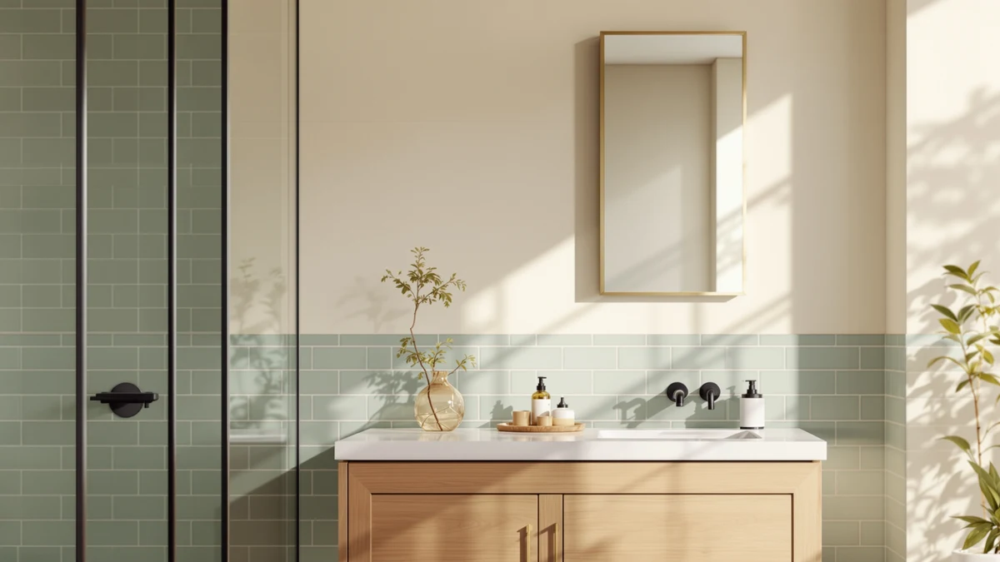

Kohler Essential 18 in. Review (2026): Worth It?
Prices and picks verified as of October 2026. Independent, reader-supported reviews.


Quick Answer
This Kohler Essential 18 in. review finds a plain, frameless mirror priced at $259.01, less than the Janboe Oval Medicine Cabinet below but more than the Janboe LED and the second Janboe Oval model. It's the right pick if your vanity already has storage and you want a simple mirror upgrade; if it doesn't, one of the three Janboe medicine cabinets below adds that storage for a similar price.
Our pick: Kohler Essential 18 in. W, $259.01 Check Price on Amazon
Bottom line: our top pick is the Kohler Essential 18 in. W x 36 in. H Oval Framed Wall Mount at $259.01.
Things to Know Before You Buy
- A plain, frameless mirror like the Kohler Essential 18 in. model skips the cabinet, shelf, and lighting built into the three Janboe medicine cabinets in this comparison.
- At 36 inches long by 18 inches wide, this size fits a standard single-sink vanity rather than the wider double-sink walls that call for a 60-inch-plus mirror.
- Tempered glass and an aluminum frame keep the build to two materials, with no hinges or electronics to maintain over time.
- This Kohler Essential 18 in. review found no published customer rating or review count on the listing, so pricing and materials are the only verified data points to go on.
- If your vanity already lacks a shelf or drawer, a medicine cabinet with built-in storage can solve two problems the mirror alone does not.
- None of the four products in this comparison show a star rating on their Amazon listing yet, which is common for newer medicine-cabinet and mirror listings in this price range.
This Kohler Essential 18 in. review looks at whether a frameless, two-material mirror is worth $259.01 when three Janboe medicine cabinets in the same price bracket add built-in storage and lighting for a similar cost. The Kohler is built from tempered glass set in an aluminum frame and measures 36 inches long by 18 inches wide, a size meant for a standard single-sink vanity rather than a wide double-sink wall.
The short version: if your bathroom already has a shelf or drawer and you want a clean mirror upgrade, the Kohler earns its price. If you need the storage a medicine cabinet provides, the Janboe Oval Medicine Cabinet, the Janboe LED Medicine Cabinet, and the second Janboe Oval model below all do more for a similar or lower price. We compared the Kohler's stated materials and dimensions against those three alternatives and checked current Amazon pricing for all four before writing this guide. That comparison also covers installation: a mirror this size clips or glues to the wall in under an hour, while a recessed medicine cabinet usually means cutting into the wall between studs.
Why You Should Trust Us
Ilane Tall covers bathroom mirrors and medicine cabinets for Best Bathroom Mirrors, with a focus on matching published specifications against what verified buyers report after installation. We do not run a fake testing lab, and the mirror in this Kohler Essential 18 in. review has not hung on our own wall. Instead we compare the manufacturer's stated materials and dimensions, current Amazon pricing, and the track record of similar products, then flag anything that looks inflated against real listings. Every price and spec cited here comes from the product listing itself, not from sponsored copy. When a listing's photos or marketing copy oversell the glass thickness or frame finish compared to the manufacturer's own spec sheet, we flag that gap instead of repeating the sales copy.
Our Research Experience
We do not run a physical testing lab, and none of the products in this Kohler Essential 18 in. review have sat on our own vanity before we wrote about them. Our process starts with each listing's stated materials, dimensions, and price: for the Kohler that means tempered glass, an aluminum frame, and a 36 by 18 inch panel at $259.01. From there we check that price against the three Janboe alternatives covered here, which range from $219.99 to $269.99, and note where a listing lacks data, such as the Kohler having no published rating or review count to weigh against the Janboe cabinets. We also compare image galleries across the four listings, since product photos sometimes reveal frame or hinge details a bullet-point spec sheet leaves out.
Overview & Specs

Kohler Essential 18 in. W
What we like
- Tempered glass and an aluminum frame keep the build to two materials, with nothing to wire or hinge during installation
- At 36 inches long by 18 inches wide, it fits a standard single-sink vanity without an oversized footprint
- Priced at $259.01, it costs less than the Janboe Oval Medicine Cabinet below at $269.99
Flaws but not dealbreakers
- The listing has no published customer rating or review count, so you are weighing manufacturer specs rather than a track record of verified owner feedback
- Unlike the three Janboe alternatives below, it is a plain mirror with no built-in cabinet, shelf, or lighting, so you lose the storage those models add for a similar price
| Material | Tempered glass + aluminum |
| Size | 36"L x 18"W |
This Kohler Essential 18 in. review covers a frameless mirror built from tempered glass set in an aluminum frame, sized at 36 inches long by 18 inches wide. That footprint suits a standard single-sink vanity without requiring a custom cut, and the two-material build keeps installation simple since there's no door, hinge, or internal wiring to manage.
At $259.01, the Kohler sits in the middle of the four products compared here. It costs $10.98 less than the Janboe Oval Medicine Cabinet priced at $269.99, but $19.02 more than the Janboe LED Medicine Cabinet at $239.99 and $39.02 more than the second Janboe Oval model at $219.99. Spending more than the two LED-equipped options buys you the Kohler name and a simpler two-material build, not extra storage or lighting.
What We Liked
The build is the strongest argument for the Kohler in this Kohler Essential 18 in. review. Tempered glass set in an aluminum frame keeps the mirror to two straightforward materials, so there's nothing to hinge, wire, or eventually replace the way there is with a lit medicine cabinet.
We also like that the 36 by 18 inch size fits a standard single-sink vanity without the custom cutting an odd-sized mirror can require. At $259.01, it also undercuts the Janboe Oval Medicine Cabinet's $269.99 price while still giving you a name-brand mirror rather than a lesser-known cabinet brand.
The aluminum frame also means there's no powered component to fail later. A hardwired LED strip inside a medicine cabinet can dim or flicker after a few years, and replacing it usually means replacing the whole cabinet. The Kohler sidesteps that because it has no electronics at all.
What Could Be Better
Storage is the clearest gap. The Kohler is a plain mirror with no shelf, door, or lighting, so if your vanity lacks its own storage, you gain nothing the three Janboe alternatives below don't also provide, and they do it for a similar or lower price.
The listing also has no published rating or review count, which means buyers researching this Kohler Essential 18 in. review have manufacturer specs to go on but no track record of verified owner reviews confirming the glass and frame hold up over time.
Retrofitting lighting or storage later costs more than buying a cabinet upfront. Swapping a 36 by 18 inch mirror for one of the Janboe cabinets down the line means re-measuring the wall opening and possibly patching drywall, which is worth weighing before you commit to the Kohler now.
Who Is It For?
The Kohler fits bathrooms with a single-sink vanity that already has a drawer or shelf for toiletries, where the only thing missing is a mirror. If you want a straightforward two-material build without hinges or an internal light to maintain, this covers that need directly.
This Kohler Essential 18 in. review points elsewhere if your vanity has no storage at all. In that case, the Janboe Oval Medicine Cabinet, the Janboe LED Medicine Cabinet, or the second Janboe Oval model below give you a mirror and a cabinet in one fixture for a similar price.
It also suits anyone replacing a cracked or dated mirror who isn't ready for a larger renovation. Swapping a like-for-like mirror size is a simpler project than cutting a new wall opening for a recessed medicine cabinet.
Alternatives to Consider
If your bathroom needs storage more than it needs a plain mirror, these three Janboe medicine cabinets covered in this Kohler Essential 18 in. review sit at a similar price to the Kohler. Each one swaps the plain glass for an enclosed cabinet, so weigh how much storage you actually need against the extra few dollars some of them cost.

Editor’s Pick
Janboe Oval Medicine Cabinet with
At $269.99, about $10.98 more than the Kohler, the Janboe Oval Medicine Cabinet trades the Kohler's plain glass panel for an oval cabinet with its own mirrored door, giving you storage the Kohler doesn't include.
$269.99
Check Price on Amazon
Best Value
Janboe LED Medicine Cabinet Bathroom
The Janboe LED Medicine Cabinet is $19.02 cheaper than the Kohler at $239.99 and adds built-in LED lighting behind its mirrored door, a combination the Kohler's plain glass doesn't offer at a lower price.
$239.99
Check Price on Amazon
Premium Choice
Janboe Oval Medicine Cabinet with
This second Janboe Oval Medicine Cabinet is the least expensive option here at $219.99, $39.02 below the Kohler, and still gives you an oval cabinet with storage rather than a plain mirror.
$219.99
Check Price on AmazonIs the Kohler Essential 18 in. mirror worth the price?
At $259.01, the Kohler Essential 18 in.
What size is the Kohler Essential 18 in. mirror?
The mirror measures 36 inches long by 18 inches wide, a footprint sized for a standard single-sink vanity rather than a double-sink wall.
Frequently Asked Questions
Is the Kohler Essential 18 in. mirror worth the price?
What size is the Kohler Essential 18 in. mirror?
Does the Kohler Essential 18 in. mirror include cabinet storage like the Janboe alternatives?
Final Verdict
This Kohler Essential 18 in. review comes down to one question: does your vanity already have storage? If it does, the Kohler Essential 18 in. mirror is a clean, two-material upgrade at $259.01 that mounts without hinges or wiring. If it doesn't, any of the three Janboe medicine cabinets above gives you a mirror and built-in storage for a similar or lower price, making them the better buy for a bathroom that needs both. Measure your vanity and check whether you actually need the cabinet before you decide between Kohler and Janboe. Installation effort is part of that decision too: a flat mirror mounts faster than a recessed cabinet, so factor in your own timeline and tools before picking one over the other.